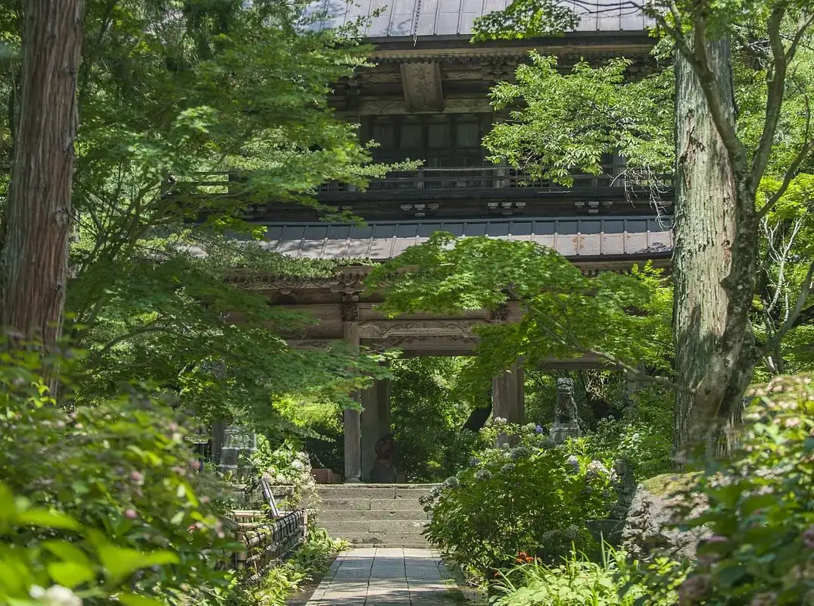
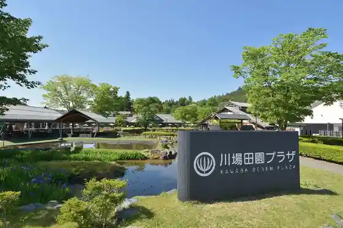
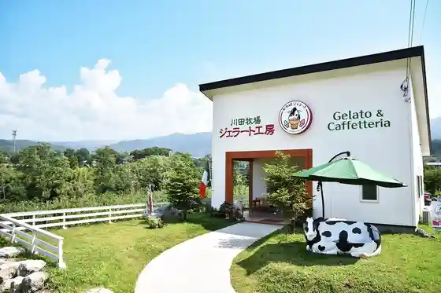
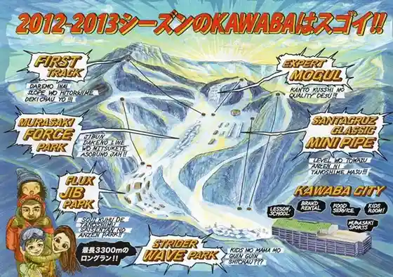

Kawaba
Kawaba · Gunma
Kawaba
Highlighted on the Gunma map.

Sights
Roadside Station Kawaba Den'en Plaza

Seiryu Yama Kichijoji
Kawaba Jierato

Kawaba Ski Area

Tsuchida Shuzo (Kabu) (Shuzo Yo Kokko)
Den'en Plaza Kawaba
Den'en Plaza Kawaba Men Ya Kawa Takumi
Tsuchida Shuzo
Kawaba Folk History Museum